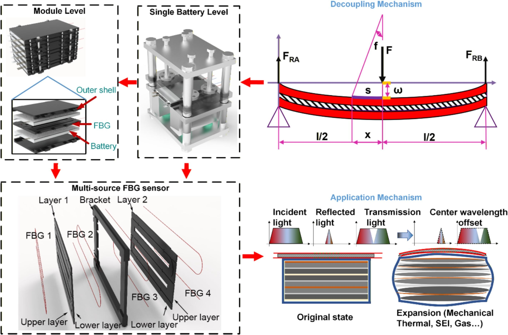
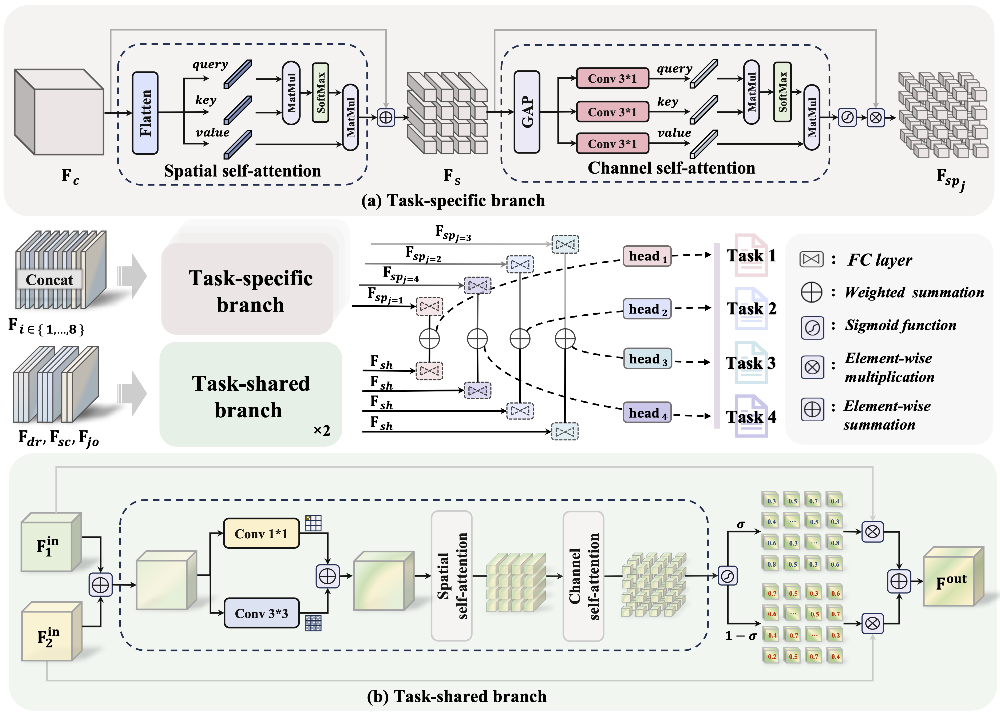
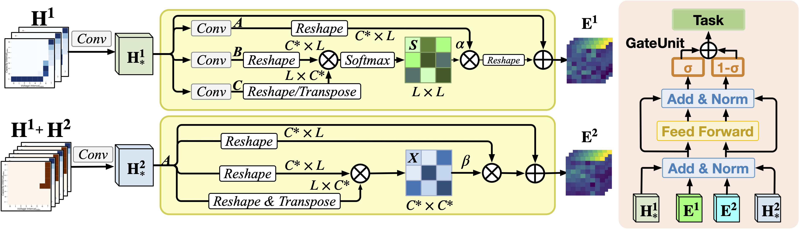
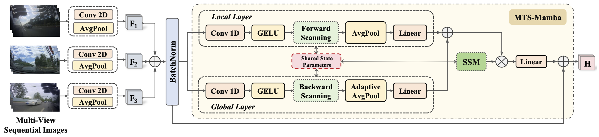
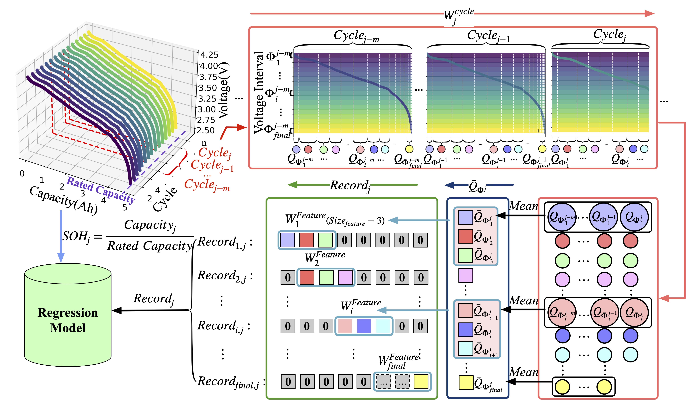
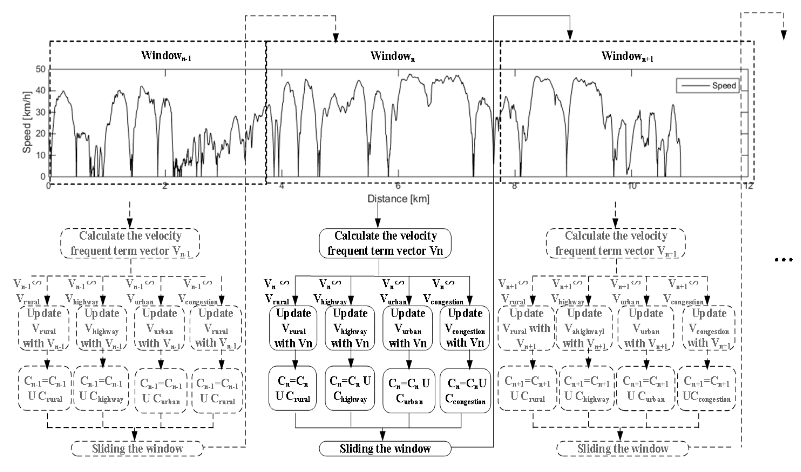

{kind=link}

Breakthrough in fine state monitoring of lithium-ion smart batteries towards module applications
Journal of Energy Storage, 2026
Impact Factor: 10.7
I am a doctoral student at the Energy and Transportation Domain, Beijing Institute of Technology, studying with Prof. Wenwei Wang and Assoc. Prof. Yiding Li.
I am also jointly trained with the National Engineering Research Center of Electric Vehicles (BIT, Beijing) and the Shenzhen Automotive Research Institute (BIT, Shenzhen). Our research group is part of the team led by Academician Fengchun Sun, a pioneer in the field of electric vehicles in China.
My research focuses on battery state estimation and smart battery technologies. I develop intelligent systems for understanding battery behavior and enabling advanced energy solutions beyond conventional capabilities.

Journal of Energy Storage, 2026
Impact Factor: 10.7


Applied Energy, 2025
Impact Factor: 12.2

International Conference on Intelligent Robots and Systems (IROS 2025)

Journal of Energy Storage, 2024
Impact Factor: 10.7

Energies, 2022
Impact Factor: 3.9
{kind=link}
{kind=link}
{kind=link}
{kind=link}
{kind=link}